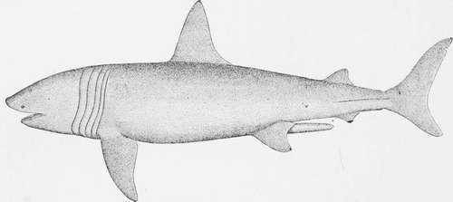
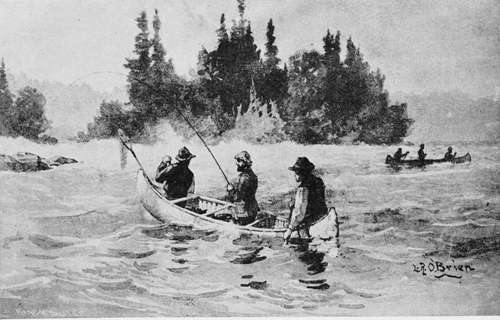
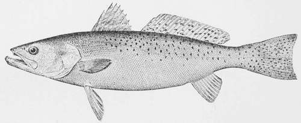

Sheep's-Heads, Groupers, And Mangrove Snappers
Description
This section is from the book "American Game Fishes", by W. A. Perry. Also available from Amazon: American Game Fishes: Their Habits, Habitat, and Peculiarities; How, When, and Where to Angle for Them.
Sheep's-Heads, Groupers, And Mangrove Snappers
" There where the affluent current pours The deepest o'er its muddy floors, The greedy sheep's-head hidden lie, To seize whatever may float by."
-IsaacMcLellan, "Poems of the Rod and Gun."
At breakfast the next morning we met with a new-comer, Dr. Williams, a professor in a Western College, a tall slender man of some thirty years old, with dark complexion, hair, and eyes. He had come to Florida for health and sport, and also to make collections in natural history. "What fish are these?" he inquired of our host.
"That is Channel Bass you have on your plate. The judge, here, caught it yesterday, a fine, fat fish."
Judge: "Let me recommend a squeeze of this lemon on the fish, doctor; the fish and the sauce are both natives."
Professor: "An improvement, certainly. How large was this fish?"
Host: "Twenty-five pounds, or so."
Professor: "Did you catch it with the rod I saw on the piazza, judge?" "The same."
Professor: "Well, I want to try this fishing that I hear so much about, but I fear that my tackle will not answer; my rod never killed a fish over two pounds."
Host: "Perhaps you had better begin with a hand-line; I can fit you out."
Professor: "All right, I will do so. Do these oysters grow in this river?"
Host: "Yes, sir; we get them close by the house; but better ones grow in the other river."
Professor: "What river is that?"
Host: "The Hillsboro'-across the Inlet, about two miles south of here."
Judge: "Mr. Pacetti, as our friend here would like to go out to-day, perhaps he had better go with us, and the major can go in another boat with one of your sons."
Host: "Yes, that will do. Burt has another boat. I want to take you toward the Inlet to-day; we will fish on this shore till the tide slacks, and then cross to the mouth of the big creek, where there is a plenty of good fish."
Professor: "What kind of fish?"
Host: "Sheep's-head, Grouper, Snapper and Bass, perhaps."
Burt: "Sharks, too, father, and Stingarees."
Host: "No doubt; but these gentlemen from the North all want big fish, you know."
Major: "Me too; I want to catch a Shark."
Host: "Perhaps the Shark may catch you."
Major: "All right; I hear a great deal about Sharks, and I want to see one."
So, as arranged, we went down the river against the tide in two boats. Two hundred yards below the house we anchored near the bank in some fifteen feet of water; the bank was about ten feet high, and covered with live oaks and palmettos. One big tree was lying in the water, and near this we anchored. We had a few fiddlers for bait, this being a Sheep's-head ground. The professor's hooks were first baited by P., who threw them into the channel.
"Draw your line taut after the lead touches bottom, and watch for a nibble," said he.
I cast thirty feet astern. The tide was strong and took my bait some distance before it reached the bottom. As I raised my sinker, I felt a nibble, and hooked the fish, which was a good one, and made several short runs and surges before I got him near the boat, then he went for the bottom so strongly that six inches of my rod tip went under. When I got him alongside so that the net was put under him, he was found to be a four-pounder in good condition.
Basking Shark, or Bone Shark- maximus.
As P. unhooked the Sheep's-head, he said: "I reckon, professor, they have got your bait." And so it proved.
"Why, I felt nothing," said he.
"The fish in this channel are well posted," said P.; "they know how to steal bait."
Again and again the professor put out his line, and again his bait was taken. In the meantime I boated another of three pounds, and lost another by the breaking of a hook. Presently the professor managed to save a two-pound Sheep's-head, and then another. We got ten here, when our bait gave out and we went down the river. A hundred yards below where we fished, the high bank drops to a low sandy flat, which extends south half a mile to the Inlet; this flat shore extends a quarter of a mile east, to the ocean. We left this shore and struck across the river west through a mile of shallows and sand-bars, with narrow channels between them. On these sand-banks were flocks of wading birds, willets, plover, yellow-legs, oyster-catchers, and gulls, and on the bank of the Inlet sat a great flock of brown pelicans, apparently asleep, their great bills and pouches resting on the sand.
"I must come here with my gun," said the professor; "I want some of those birds for our museum."
The other boat was following us, and hailed: "How many fish, judge?"
"About a dozen-and you?"
"Only three Sheep's-head."
As we approached the west shore, we found it to be a low region, with many creeks and islands, some of them wooded with pines and palmettos-others low, and covered with mangroves. A perfect solitude prevailed everywhere. We headed for the largest creek, which was about a hundred yards wide at the mouth, part very shallow, with a deep channel on the south side, in which we anchored near the mouth of the creek.
"I will go ashore and get some fiddlers." said the skipper.
We both landed with him, and passing through a belt of mangroves we came to a low sandy flat thinly covered with marsh grass, where hundreds of these little crabs which go by the name of fiddlers, called by the learned, Gclasimus pugilator, were running to and fro. They scampered for their holes as we approached, but we soon picked up a quart or two of them, not without some pinches from the big claw which they brandished at us. Then we returned to the boat and began to fish for Sheep's-head. We found that here they were larger and bit more eagerly than at the other bank- probably because they were not much fished for here. The fun was fast and furious for half an ^hour, in which time we had taken twenty, averaging four pounds; then at slack water, they stopped biting. The other boat was near us, and had good sport also.
"Try a Mullet bait, judge," said the skipper; "j^ou might get a Grouper."
I baited with Mullet, and cast up the channel as far as possible, and near the bank. Then the professor put on a pair of small hooks with Mullet bait to try for some small fish. Soon he had specimens of "Sailor's choice," Whiting, Black-fish, Pig-fish, and a young Blue-fish, about six inches long. "These I want for specimens for my museum," said he, "and here is another odd fish"-as he pulled up a vicious-looking creature.
"That is a Toad-fish," said the skipper; "look out for his teeth!" My bait had been out ten minutes or so, when I had a vigorous snatch at it, and hooked a stout and active fish, which made for its hole. By main strength I got it into open water, and after five minutes play, I had it alongside, when P. put the landing-net under it-a four-pound Mangrove-snapper.
"I want the scientific name of this fish, if you can give it to me, professor," said I.
"When we get home I will examine it with the help of Jordan's book."
"Oh! professor, do you see that fish-hawk? He has just caught a Mullet; now there is an eagle on the dead pine on yonder island that's watching the hawk, and you will see the rascal rob the poor hawk directly."
The osprey caught his fish, and was flying away with it, when the eagle sailed from his perch in pursuit. When the osprey found itself overtaken, it uttered a scream and dropped the fish, and the eagle stooped and caught it before it struck the water. The osprey went off to look for another Mullet.
"There," said the professor, "is what the books have been telling us from the time of Doctor Franklin, but eagles are scarce at the north and we seldom see that robbery; here it can be seen every day."
"Do the eagles themselves ever dive for fish?"
P.: "Not often; they make the fish-hawks do that work; though when I catch Mullet in the fall for salting, and have a big pile of them on the beach, the eagles will come and steal them."
Judge: "How did this eagle get its common name of bald eagle? its head is as well covered as yours, professor, though much whiter."
Professor: "I suppose that some early observer seeing the white head from afar, took it for a bald head, and so reported it. An error, once started, has great vitality, and the newspaper writers, many of whom perhaps never saw an eagle, kept on calling it bald. Naturalists however, have named it properly, calling this species the white-headed eagle- Halictus leucocephalus."
Canoe Fishing, ST. Johns River.
Judge: "The fish have stopped biting, Pacetti."
P. : "Some Shark or other big fish around the boat, I reckon."
Professor: "My hook seems to be fastened to the bottom; please try to loose it for me."
P.: "You are fast to a big fish; I can't move it. Now it starts-it's powerful strong. I know what it is-a Nurse-Shark," and with much difficulty he began to drag it up. It was a heavy pull of a dead weight, but he got it up so that with a gaff hook it was got alongside. A thick-set, light brown fish, about seven feet long and a foot through, came slowly up. It resembled a Shark in outline but did not fight like a Shark.
"I will have to cut off the hook; it's too far inside to meddle with," said Pacetti, "the teeth are small, but it could cut my hand off."
Professor: "I would like to save that fish, and take his skin home with me."
P.: "Then I will kill it, and we will leave it here on the bank till we go home."
So we hauled it ashore and killed it by blows on the head with a club.
"Now we had better take lunch," said P., "it's nearly noon. Ham, bread and butter, pie, and oranges; take hold, judge. Here is something I want you to try, gentlemen- Mullet roe, smoked; I put it up every year for my own use."
Judge: "And a very good relish it is-the Mullet must be larger than those you catch for bait."
P.: "In the fall we get them to weigh three or four pounds."
While we lunched, my line had been in the water, and now I saw it moving; before I could get hold of the rod, the fish, probably a Grouper, had reached its stronghold under 21 the snags, and as I could not get it out, I was obliged to break my line, losing hook and sinker. I put on another hook, and put the bait near the same place, and in a few minutes I hooked another Grouper of over four pounds, which with some difficulty I boated. The tide having now turned, we dropped down with it, and crossed the sand flats, then anchored near the channel which led to the Inlet.
"What sail boat is that coming across the Inlet?"
"One of the Smyrna boats bound up to Daytona," said P.
We were anchored in about six feet of water and cast our baits into the channel. Soon I had a strike, and the line ran out thirty yards, and a good-sized Bass showed himself on the surface. As I was playing it, suddenly the pull became very heavy, and a big surge appeared on the water. "A Shark has got your Bass," cried Pacetti, and my line came in with half of a good sized Bass on the hook. "Bit it off, as if cut with an ax," said P. "now I will have satisfaction out of that Shark," and he took a heavy line with a big hook and chain, from a locker, and baited with the head and shoulders of the Bass, which he cast out in the channel. There was a bare sand-bank near by, and there we landed and drove a stout stake into the sand, and made the line fast to it. In about ten minutes P. began to haul in the line; as the bait came in sight we saw a large Shark following it, and when it came within ten feet of the bank, it was seized and taken away. Then P. gave a smart pull. "He is hooked! lay hold, boys -and rouse him out on the bank." Easier said than done, for the Shark, turning, dragged the three of us to the water's edge, and we had to trust to the stake, which, however, held, and after some heavy drags at it, we again laid hold and succeeded in hauling the Shark ashore. "Look out for his tail," said Pacetti, as he pounded the head of the fish. It was eight or nine feet long, and showed a fearful set of teeth.
"Can I take this one too?" asked the professor.
P.: "lean catch one for you at the landing, most anytime, and save the trouble of carrying it home." "All right."
Judge: "I noticed when that Shark followed the bait, that he took hold like any other fish. Now I often read about a Shark being obliged to turn over on his back before he can take hold. How is that, Pacetti?"
P.: "Well, as far as I know, they take hold like other fish, and I have caught hundreds of them."
Judge: "Probably this is another of those popular errors, copied by one ignorant writer from another of the same kind, like the bald-eagle business, professor."
Professor: "I am glad to have seen, myself, how a Shark takes a bait."
We fished again in the channel, and got, in the course of half an hour, four Bass, weighing eight, six, five, and five pounds, and then left for home. As we went up the river, P., whose eyes were good, espied a rattlesnake swimming across to the peninsula, and started to cut it off. The snake swam strongly, with head well out of water, and when it found its retreat cut off, it turned and made for the boat. "Why," said the professor, "it is coming on board, I believe." As it came near, looking warlike and formidable, P. caught it a heavy blow with the oar, which disabled it, and it sank. "I never let one pass," said he; "they have killed too many of my dogs."
"I did not know that a rattlesnake could swim across a wide river like this," said the professor.
P.: "Oh yes, they do it; they used to be very plenty in this country, but it is settling up too fast now for them to increase much. Last summer a big one, seven feet long, was killed in my door-yard by a gopher-snake."
Judge: "What kind of a snake is that?"
P.: "It's a big black snake, seven or eight feet long, that makes war on rattlesnakes and moccasins-kills them every time, and eats them-but he always bites off the head where the 'pizen' is; he never eats that. A rattlesnake is mighty afraid of a gopher-snake, so I use to encourage them to stay about my place; and they are great rat-killers too. But after a while they got to eating up our chickens, so I had to drive them away-but I never kill one."
The steamer that plies between the two rivers now came in sight, bringing passengers from Daytona and Ormond. She stopped at the lignt-house wharf, just below our house, to land passengers.
"There's more fishermen for our place," said P.; "Daytona men, I reckon. Well, we have got fish enough to feed them, anyway." salt-water trout or southern weak-fish-cynoscion carolinensis (gill).
This species is allied to the Weak-fish or Squeteague of the northern coast, but is a handsomer and better fish. Color, silvery sides, darker above, with rows of black spots above the lateral line. Body silvery. Head small, mouth large, and well supplied with sharp teeth; in form and color much resembling the Lake-trout of Northern New York, but wanting the adipose fin. Predacious in habits, takes Mullet-bait eagerly, fights hard on the hook, and gives good sport with rod and reel, though rather less enduring than the Red Bass. This fish does not well bear keeping, but eaten fresh from the water is sweet and well-flavored. It is largest and most abundant in warm weather, when it may be heard on a still night snapping along the shore in pursuit of small fish. I have taken them from two pounds to six in weight, at Halifax Inlet, in winter. Very large specimens are taken in Musquito Lagoon, south of New Smyrna, weighing, it is said, as much as twenty pounds.
It takes bait on the bottom, at mid-water, and on the surface, and I have killed them in fresh water, while trolling for Black Bass in Spruce Brook, a tributary of the Halifax. These were of small size, about two pounds, and were taken with a spoon; and it is said that they can be taken with a fly. It is a roving fish, and is taken on the same grounds as the Bass, preferring, however, tide-ways and rapid currents; the same tackle will serve that is made for Bass. In the Halifax River it is not abundant. One seldom takes more than four or five in a day's fishing. On the Gulf coast it would seem to be plenty, as "Al Fresco" writes of taking 383 pounds of them in one forenoon. Cut-Mullet is the usual bait, though no doubt live minnows would prove more attractive-probably also to Sharks, which abound in these waters, and take away the angler's tackle, and his fish also. One great pleasure in angling in these waters is the variety of fishes encountered; you never can tell whether your next fish will weigh one pound or twenty.
Spotted Squeteague-Cynoscion maculatum.
Jordan And Gilbert's Description
Spotted Sea-Trout
Cynoscion mactdatum (Mitchell, Gill). Bright silvery, darker above; back posteriorly with numerous round black spots as large as the pupil; both dorsal and caudal fins marked with similar somewhat smaller spots, much as in a Trout and dusky maxillary reaching to posterior edge of eye; canines moderate. Longest dorsal spine not quite half the length of the head ; pectorals short, not reaching tips of ventrals, not half-length of head; caudal lunate. Head 3^, depth 5, eye large, about six-inch head. D. X. I., 25; A. I, 10; Lat. I, about 90. Virginia to Mexico, very abundant southward."
Continue to:
- prev: The Mangrove Snapper-Lutjanus Aurorubens (Cuv., Gill)
- Table of Contents
- next: The Cavalli Or Crevalle-Caranx Hippus (Gunther)